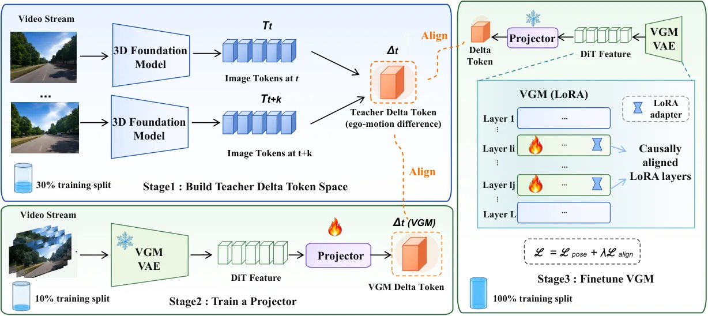
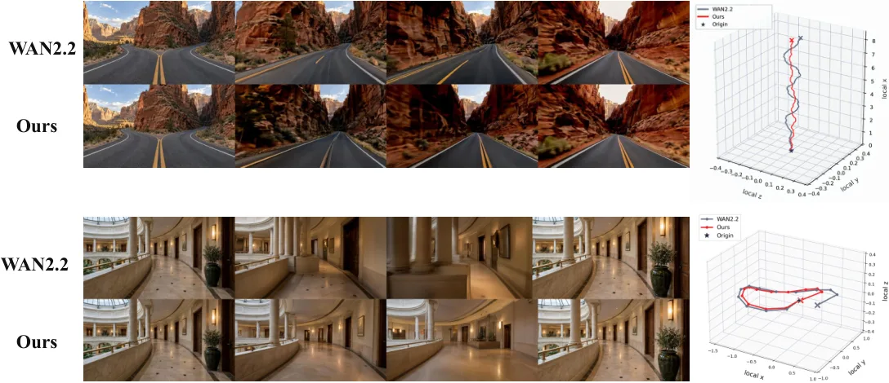
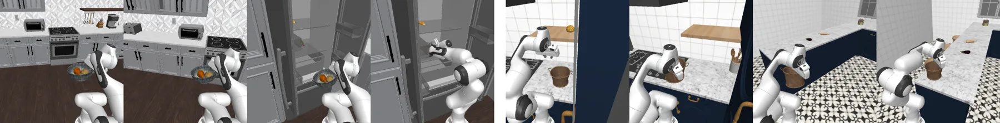

CausalAlign：先诊断“几何状态在哪一步被遗忘”，再用 delta token 定点补回
CausalAlign: Causal Alignment of Video Generation Models for Consistent Ego-Motion
把“自运动信息在去噪后段被丢掉”这件事先量化：线性探针测可解码性、四种干预（Mask/Shuffle/Replace/Inject）测因果效应，两条曲线都是先升后降。然后在衰减最快的层（10/12/14/20，主目标 14）与时间步（398/799）上，用 LingBot-Map 的 128 维结构化 delta token 做三阶段对齐（教师 token → 投影器 → LoRA），推理完全沿用原 Wan2.2、不带教师也不带 3D 缓存。重投影误差 −22.6%、平滑度 +23.9%，下游 Fast-WAM 平均成功率 43.5%→54.2%。
作者、单位与技术谱系 · Research context
作者与单位
研究脉络
- VGGT（Wang et al., CVPR 2025）方法基座关系：前馈几何模型确立了“一次前向出相机与点图”的范式；本文的教师是它的流式后继，几何监督的语义（相机位姿、深度、结构）沿自这一支。[VGGT 论文]
- LingBot-Map（Chen et al., 2026）直接教师关系：流式 3D 重建模型，用 anchor / pose-reference / trajectory 三类记忆维持几何上下文；本文冻结它，取逐帧几何状态构造 delta token。[LingBot-Map 论文]
- Delta tokens（Kerssies et al., 2026）表示载体来源关系：原用于世界模型效率的“一帧一 token”帧间差分表示；本文把它改造成几何 delta token，并加上 64/40/24 的结构化分区与三个辅助任务。[Delta tokens 论文]
- Geometry Forcing（Wu et al., ICLR 2026）上游对比方法关系：直接把 3D 特征对齐进视频生成器，但没有选择有效时间步与层；本文用因果诊断选点，形成方法上的直接改进关系。[论文 §2 对照分类]
合作网络
- Yixin Chen北京大学 → 北京通用人工智能研究院（BIGAI）关系：跨单位署名[arXiv v1 TeX 作者块]
- Duomin WangNVIDIA → 北京大学作者群关系：共同署名[arXiv v1 TeX 作者块]
- Yin Li / Miao LiuUW–Madison / 清华大学 → 北京大学作者群关系：共同署名[arXiv v1 TeX 作者块]
- PKU-VaLuE-Lab北京大学作者群 → github.com/PKU-VaLuE-Lab/CausalAlign关系：官方代码仓库[代码仓库]
作者、共同一作与通讯作者取自 arXiv v1 TeX 的 \author/\affiliation 与脚注；采集器元数据只列了 8 位作者，漏掉了 Daquan Zhou 与通讯作者 Yiwu Zhong，本页按原文补全。单位关系只记录共同署名与官方仓库，不推断导师、师生或实验室隶属。
方法本质拆解 · What actually changed
是不是微调？
是微调，但只动很小一部分：Wan2.2-14B 骨干冻结，仅在被诊断选中的 4 层与 2 个去噪时间步上训练 LoRA；Stage 1 训练教师侧 delta 编码器与三个辅助模块，Stage 2 训练 VGM 侧投影器，Stage 3 只训 LoRA，教师、投影器、相机解码器全部冻结。所以权重确实变了，但改变范围被诊断结果严格限定，不是全参数后训练。
有没有额外约束？
输入侧没有任何新增条件：仍然只有首帧加文本提示，不给相机轨迹、不给 3D 缓存。约束全部在训练期：delta token 对齐损失把 VGM 的帧间转移拉向教师 delta 空间，位姿损失再用一个冻结的相机解码器显式监督相对运动，权重 λ_Δ=0.2 控制两者比例。此外结构化的 64/40/24 分区本身就是一种先验约束，强制 token 把自运动、几何与视觉信息分开编码。
推理/后端到底做了什么？
推理路径与原 Wan2.2 完全一致：同样的去噪步数、同样的解码，没有额外分支、没有缓存、没有测试时优化，也没有教师模型。所有训练期模块（LingBot-Map、delta 编码器、投影器、相机解码器）在部署时整体移除，因此单帧生成成本不变。这与“外部 3D 缓存”路线形成直接对照：后者要在推理时构造并维护几何记忆。
方法本质是什么？
本质是把“几何监督应该加在哪里”变成一个可测量的问题：用探针量信息量、用干预量因果作用，取下降最快的位置作为注入点，避免全层均匀对齐把监督稀释。注入的载体不是稠密几何特征，而是“相邻帧变化”的紧凑 token，因此监督信号天然聚焦运动而非静态外观。它改变的是 VGM 内部自运动状态在去噪后段的保留程度，而不是给它外挂一个几何模块。
输入首帧与文本；用探针加干预定位自运动信息衰减的层与时间步；在这些位置用 3D 教师的 delta token 监督 LoRA，使去噪后段仍保留相机运动状态，从而在不增加推理输入的情况下提升几何一致性与下游动作成功率。

结论与问题Conclusion & Motivation
核心结论
论文先把一个模糊的工程抱怨变成可测现象：扩散视频模型其实“知道”相机怎么动，但在去噪后段与最后几层把这个状态丢掉了，作者称之为 geometric state forgetting。诊断方法是线性探针（可解码性）加四种因果干预（因果效应），两者在层与时间步两个方向上都呈先升后降。据此在衰减最快的层与时间步上做 delta-token 对齐，重投影误差降 22.6%、轨迹平滑度升 23.9%、视觉质量基本不变，下游移动操作成功率 43.5%→54.2%。
动机与问题
现有三条路线各有短板：外部 3D 缓存（GEN3C、Voyager）要额外几何记忆、还会传播缓存误差；偏好对齐（VideoGPA、Epipolar-DPO）只优化输出、不改善内部几何状态；直接特征对齐（JOG3R、Geometry Forcing、FantasyWorld）把几何特征塞进生成器，但层与时间步是任选的，没有回答“塞到哪里才有用”。作者的问题因此是双重的：自运动在 VGM 内部如何被表示、使用与保留？以及应该在哪一层、哪一个去噪步上施加监督？
方法Method
方法总览
方法分诊断与对齐两段。诊断段：对相邻帧隐状态构造转移特征 u=Γ(h_t,h_{t+1})，用线性探针回归相对位姿 ξ=Log(T_t^{-1}T_{t+1}) 得可解码性 D；同时做 Mask/Shuffle/Replace/Inject 四种干预，用生成视频的轨迹误差相对同范数随机对照的变化量得因果效应 C；两者归一化平均后取下降率最大的位置作为目标层与目标时间步。对齐段三阶段：Stage 1 用冻结的 LingBot-Map 学 128 维结构化 delta token（含重建、时间预测、相对位姿三个辅助任务）；Stage 2 只训投影器把 VGM 特征映射进同一 delta 空间（用 10% 训练数据）；Stage 3 在这些层与时间步上只训 LoRA（用全量数据），骨干、教师、投影器全部冻结。
关键技术细节
delta token 是结构化的 128 维：64 维自运动 + 40 维几何 + 24 维视觉，监督时用 PCA 与两个未分区的 128 维编码器做等宽对照，证明分区本身有效（旋转误差 2.244° 对 2.453°/2.837°）。选中的层是 {10,12,14,20}（14 为主目标），时间步是 {398,799}，权重按归一化正下降率分配；Stage 1 的 λ_temp=0.1、λ_pose=0.2，Stage 3 的 λ_Δ=0.2，最终损失为位姿损失加 λ_Δ 倍 token 对齐损失。关键设计是“梯度穿过冻结投影器与相机解码器回到 LoRA”，因此投影器不需要在 Stage 3 再动；推理时按原 Wan2.2 流程走，教师与缓存全部不需要。

实验Experiments
实验设置
基座是 Wan2.2-14B-I2V，训练数据为 DL3DV 与 RealEstate10K（各 90% 训练 / 10% 留出评估）；三阶段分别用训练集的 30%、10%、100%。评测分三块：运动幅度（平移/角速度均值与真实视频的接近度）、几何一致性（重投影误差、静态区深度-光流一致性、对极误差）、时间动态（平滑度、jerk），统一用同一个冻结估计器从生成视频反解相机、深度与光流；对照覆盖外部缓存、偏好对齐、直接特征对齐三类共 7 个方法。下游把 Fast-WAM 的视频专家换成微调后的 Wan2.2，在 RoboCasa365 Target100 上按 500 条目标任务演示训练 50k 步，三相机输入、预测 32 步动作、执行 8 步后 20 Hz 重规划。
实验数字与比较
主表（DL3DV+RealEstate10K 留出集）：重投影误差 8.4→6.5 像素（−22.6%），深度-光流一致性 6.9→5.5 像素，对极误差 2.9→2.1 像素，轨迹平滑度 0.71→0.88（+23.9%），jerk 0.182→0.151，平移速度接近度 0.68→0.79，角速度接近度 0.70→0.89；七项里六项为最优，只有深度-光流一致性以 5.5 略逊于 FantasyWorld 的 5.4。视觉质量：VBench quality 0.805→0.806、I2V 0.958 持平、FVD 182.4→182.7、SSIM 0.742→0.744。下游 RoboCasa365：平均 43.5%→54.2%（+10.7），Atomic Seen 59.1%→78.1%（+19.0，703/900 次成功），Composite Seen 36.4%→40.8%，Composite Unseen 33.2%→40.6%；与 ABot-M0.5 的 54.2% 平均持平，但 Atomic Seen 更高（78.1 对 70.6）。
消融/失败边界
表示层：结构化 128 维 delta token（64/40/24）旋转误差 2.244°、方向误差 7.565°，优于两个未分区 128 维编码器（2.453°/8.582° 与 2.837°/10.392°）；也优于直接用 LingBot-Map 原始 8192 维拼接特征（3.243°/12.964°）与 4096 维差分（4.276°/13.451°），说明“学出来的变化表示”比“更大的原始特征”更有效。目标函数层：只用局部相对位姿监督，轨迹增益最大（+3.525%）但几何增益为 −0.468%；改成 RPE+运动学组合后轨迹增益降到 +1.299%，几何转正到 +0.643%、时间项 +0.025%——这是一处明确的“此消彼长”，说明约束加得越多不一定全面更好。更新强度层：把后层更新尺度从 0.50 降到 0.25，轨迹增益 1.750%→2.209%、几何 −0.506%→+0.761%，但时间与视觉增益下降。
局限与迁移Limitations & Transfer
局限与待核验
作者没有单设局限章节，只在附录承认主 I2V 协议是一对多问题、因此不报绝对位姿误差（改用内在一致性指标），并用单独的轨迹条件协议补充。我们的待核验项：(a) 所有几何指标都由同一个冻结位姿估计器给出，若该估计器本身对生成伪影敏感，结论会被耦合放大，论文未给估计器误差的上界；(b) 目标层与时间步是在 Wan2.2-14B 上选的，换模型家族（尤其非 DiT 或不同噪声调度）是否仍成立未验证；(c) 下游只验证了 Fast-WAM 一种初始化方式，且与 ABot-M0.5 平均分持平，+10.7 的迁移幅度有多少来自视频质量、多少来自动作数据未拆开；(d) 训练成本（14B + 三阶段）未报告，复现门槛待核验。
与你研究路线的关系
“先测信息在哪一层/哪一步衰减，再定点监督”这套流程可以直接搬到多传感器融合：把探针换成对速度、重力方向或尺度的线性读出，把干预换成对 IMU 预积分或视觉特征的替换，就能定位融合网络里哪一层开始丢失运动信息。delta token 的“只编码帧间变化、丢弃静态内容”也很适合在线标定——它天然压制静态场景、放大相对运动，与你关心的外参漂移检测是同一类信号。下一步建议做最小实验：在你现有的 VIO 网络上加线性探针读相对位姿，记录逐层可解码性；若某层出现明显衰减，再尝试只在该层加低秩适配，比较与全网络微调的收益/成本。



